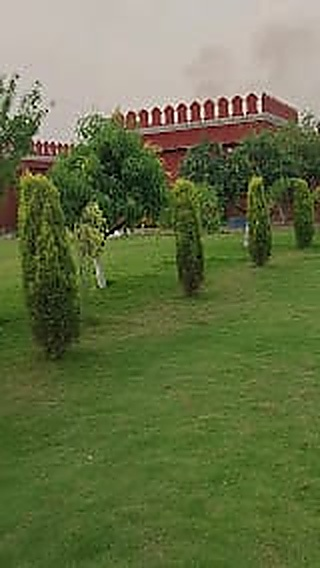

Weddings & Receptions 1,000+ GuestsThe Grand Imperial Lawn & Walkways
A vast natural emerald carpet lawn surrounded by boundary walls and ornamental trees at The Krishna Farms. Perfect for royal stages, flower-adorned mandaps, dramatic fireworks, and grand banquet layouts under starry skies.
Natural Green Turf
Drone Friendly
Heavy Power Backup
Inquire for Wedding Package